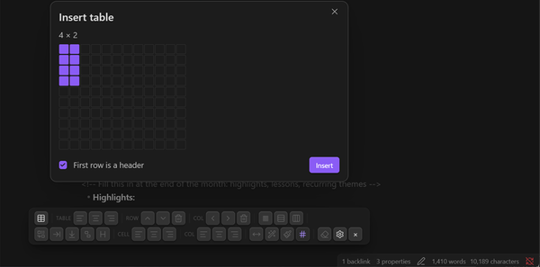
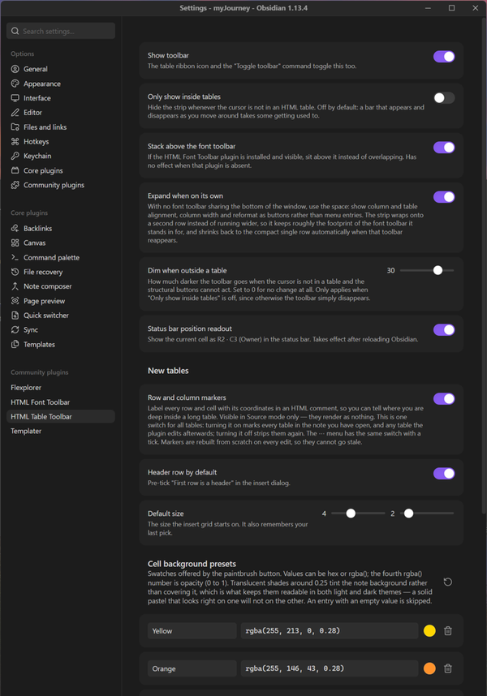

A free plugin for Obsidian that adds a Word-style toolbar for real HTML tables in your notes. Markdown pipe tables cannot merge cells, shade an individual cell, hold multi-block content, or centre themselves on the page. This plugin writes and edits actual <table> markup instead, and puts a button on every structural edit that markup normally makes tedious.
This and HTML Font Toolbar are built to the same house style and designed to sit side by side, but neither depends on the other — install either one alone and it works completely. Run both and they cooperate on purpose: the table strip measures the font toolbar and stacks above it rather than overlapping, shrinking to a compact single row when they share the bottom of the window and expanding when it has the space to itself. Each has its own ribbon icon, so either can be shown or hidden on its own.
Tables written as HTML render in Obsidian, Typora and VS Code, and keep their merged cells on GitHub, but Hugo and Pandoc drop raw HTML entirely. The bigger trade is editing rather than rendering: Obsidian's native table controls, Advanced Tables and Dataview all work on pipe tables and ignore <table>. That makes this a good fit for reference tables you build once and read often, and a poorer one for a document whose tables are still changing shape every day.
Free and open source, for Obsidian on the desktop — available in the official Obsidian community plugin directory. In Obsidian, go to Settings → Community plugins → Browse and search for “HTML Table Toolbar”, or open the directory page below.
Install from Obsidian Community Plugin on GitHubManual install (alternative): download main.js, manifest.json, and styles.css from the latest release into <your vault>/.obsidian/plugins/html-table-toolbar/, then enable the plugin in Settings → Community plugins.


HTML Table Toolbar is free, open source, has no ads, and collects nothing about you — it runs entirely inside your vault, and every table it writes is plain HTML that stays in your own notes. That is the way an Obsidian plugin ought to work, and it is also why plugins like this are hard to sustain: there is no data to sell and no subscription to bill, so nothing pays for the work behind them.
Small tools take real time to build and, more importantly, to keep alive. Obsidian moves forward, the editor changes underneath a plugin, bugs surface in real use, and features get added because someone asked. A donation, however small, is what makes that continued attention possible — and it directly funds the next free tool as well as the upkeep of this one.
If this toolbar saved you an evening of hand-editing table markup, please consider chipping in. It genuinely makes the difference between a project that keeps improving and one that quietly stops.
DonateSecure payment through PayPal — no account required, and any amount is appreciated. Thank you for supporting independent, free software.